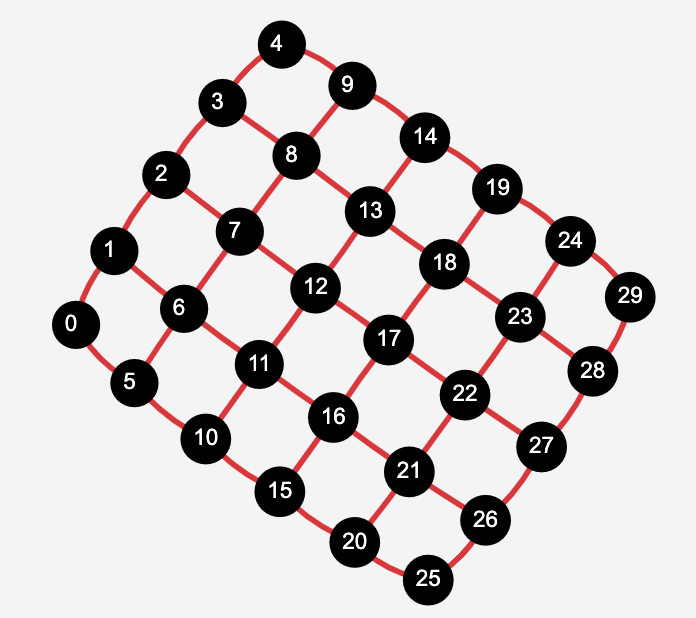

Welcome to the qoqo-qryd/roqoqo-qryd user documentation!
This software is designed to support the QRydDemo project on quantum computing with Rydberg atoms. It provides components to support QRydDemo quantum computers based on the qoqo quantum toolkit by HQS Quantum Simulations used to represent quantum circuits.
To learn more about the general approach to create quantum programs and executing them in qoqo see Introduction and Execution.
This software is split into two packages:
- roqoqo-qryd: Implementing the core functionality and a Rust interface.
- qoqo-qryd: The Python interface.
The packages are based on the open source qoqo quantum computing toolkit.
Interface to the current QRydDemo WebAPI
At the moment QRydDemo WebAPI allows access to Quantum Hardware Emulators of different device topologies.
qoqo-qryd/roqoqo-qryd support interfacing with the corresponding REST-API with low level calls, i.e. using Circuit, as well as with high-level backend based functionalities, i.e. by using QuantumPrograms in qoqo. For more details see WebAPI.
QRydDemo specific hardware operations (prototype)
Rydberg atom based quantum devices support, in principle, operations not commonly found in other quantum hardware. Changes in device topology are one of these operations. roqoqo-qryd/qoqo-qryd adds support for changes in device topology to qoqo. For more details see QRyd Specifics. Note that this is a preview prototype and does not represent a finalized set of operations on the QRydDemo hardware.
Local simulator supporting specific hardware operations
qoqo-qryd/roqoqo-qryd include a local QuEST based simulator for quantum devices supporting the Rydberg specific quantum operations. The simulator is intended to let users test the capabilities of quantum hardware with the additional operations. For more details see QRyd Specifics. Note that the devices for the simulator do not represent a finalized design for QRydDemo.
Examples
A collection of example python programs can be found in Examples.
OpenSSL
Acknowledgments related to using OpenSSL for http requests:
This product includes software developed by the OpenSSL Project for use in the OpenSSL Toolkit (http://www.openssl.org/).
This product includes cryptographic software written by Eric Young (eay@cryptsoft.com). This product includes software written by Tim Hudson (tjh@cryptsoft.com).
Introduction
The qoqo-qryd package is designed to enable the execution of quantum algorithms implemented in qoqo on QRydDemo hardware.
Low level: quantum circuits
Qoqo is a circuit based quantum computing toolkit. Like many other quantum computing toolkits it can be used to construct quantum circuits - sequences of quantum operations that are to be executed on a quantum computer.
Examples for quantum operations are the controlled NOT (CNOT) operation on two qubits and the Hadamard gate on a single qubit.
from qoqo import Circuit
from qoqo import operations as ops
circuit = Circuit()
# Initializing first qubit in superposition of |0> and |1>
circuit += ops.Hadamard(0)
# Entangling qubits 0 and 1 with CNOT
circuit += ops.CNOT(0,1)
To extract information from a quantum computer results must be measured. For measurements qoqo defines classical registers in the quantum circuits. The classical measurement results will be written to the classical registers. The definition of classical registers is similar to a variable declaration in normal programs.
The measurement of a qubit (on hardware) is always a projective measurement in the Z-basis yielding 0 or 1.
from qoqo import Circuit
from qoqo import operations as ops
circuit = Circuit()
# Defining a bit readout with name "ro" containing 2 bits
circuit += ops.DefinitionBit("ro", 2, is_output=True)
# Initializing first qubit in superposition of |0> and |1>
circuit += ops.Hadamard(0)
# Entangling qubits 0 and 1 with CNOT
circuit += ops.CNOT(0,1)
# Measuring all qubits and writing the results into register 'ro'
# Repeating the circuit 100 times to create 100 projective measurements
circuit += ops.PragmaRepeatedMeasurement("ro", 100, None)
High-level: quantum programs
On a more abstract level a quantum program can be defined as a program that can be executed on a quantum computer after receiving a list of classical parameters and returns a list of classical results.
Qoqo provides the QuantumProgram class for this purpose. A QuantumProgram is the preferred way to communicate between different programs (for example with hardware or simulators) and to save quantum programs with the qoqo toolkit.
For many applications the measurement results of several circuits need to be combined to extract the required information from a quantum state prepared by the quantum operations in a quantum circuit. The combination of the results of each quantum circuit happens in a post-processing of classical measurement.
A qoqo measurement combines one constant_circuit that is always executed first, a list of circuits that are executed after the constant circuit, and a measurement_input that encodes the classical post-processing.
As an example take the measurement of a Hamiltonian H = 0.1 * X + 0.2 * Z where X and Z are Pauli operators. We want to measure H with respect to a state |psi> = (|0> + |1>)/sqrt(2).
We will use a Hadamard gate in the constant_circuit to prepare |psi>. Since we cannot measure X and Z at the same time, the circuits list will include one quantum circuit that does not apply any additional gate and one circuit that rotates the qubit basis into the X-basis so that the expectation value <X> is equivalent to the measurement of <Z> in the new basis.
This kind of measurement is referred to as a PauliZProduct measurement because each qubit is rotated in the correct basis for the readout.
For the post-processing the PauliZProduct measurement needs two more details to be added to the input (PauliZProductInput): Which qubits to combine into expectation values (add_pauliz_product()) and which weight to use for each result (add_linear_exp_val()).
In general one can measure the expectation values of the products of local Z operators, e.g. <Z0>, <Z1>, <Z0*Z1>, <Z0*Z3>, ...
The PauliZProductInput needs to define all of these products that are measured. Here we will measure two products <Z0> after a rotation in the X basis and <Z0> without an additional rotation.
The PauliZProductInput also defines the weights of the products in the final result. Here 0.1 for the first product and 0.2 for the second.
from qoqo import Circuit
from qoqo import operations as ops
from qoqo.measurements import PauliZProduct, PauliZProductInput
from qoqo import QuantumProgram
# Initialize |psi>
init_circuit = Circuit()
init_circuit += ops.Hadamard(0)
# Z-basis measurement circuit with 1000 shots
z_circuit = Circuit()
z_circuit += ops.DefinitionBit("ro_z", 1, is_output=True)
z_circuit += ops.PragmaRepeatedMeasurement("ro_z", 1000, None)
# X-basis measurement circuit with 1000 shots
x_circuit = Circuit()
x_circuit += ops.DefinitionBit("ro_x", 1, is_output=True)
# Changing to the X basis with a Hadamard gate
x_circuit += ops.Hadamard(0)
x_circuit += ops.PragmaRepeatedMeasurement("ro_x", 1000, None)
# Preparing the measurement input for one qubit
# The PauliZProductInput starts with just the number of qubits
# and if to use a flipped measurements set.
measurement_input = PauliZProductInput(1, False)
# Next, pauli products are added to the PauliZProductInput
# Read out product of Z on site 0 for register ro_z (no basis change)
z_basis_index = measurement_input.add_pauliz_product("ro_z", [0,])
# Read out product of Z on site 0 for register ro_x
# (after basis change effectively a <X> measurement)
x_basis_index = measurement_input.add_pauliz_product("ro_x", [0,])
# Last, instructions on how to combine the single expectation values
# into the total result are provided.
# Add a result (the expectation value of H) that is a combination of
# the PauliProduct expectation values.
measurement_input.add_linear_exp_val("<H>", {x_basis_index: 0.1, z_basis_index: 0.2})
measurement = PauliZProduct(
constant_circuit=init_circuit,
circuits=[z_circuit, x_circuit],
input=measurement_input,
)
For details on how to execute QuantumPrograms see Execution.
The qoqo QuantumProgram combines a measurement with a list of free parameters that are not set at compilation time but can be dynamically set whenever the QuantumProgram is run.
To demonstrate this we modify the example from above to use a state |psi> with a free angle between |0> and |1>. Such a state can be prepared by a RotateX quantum operation.
from qoqo import Circuit
from qoqo import operations as ops
from qoqo.measurements import PauliZProduct, PauliZProductInput
from qoqo import QuantumProgram
# initialize |psi>
init_circuit = Circuit()
# Apply a RotateY gate with a symbolic angle
# To execute the circuit this symbolic parameter needs to be replaced
# by a real number with the help of a QuantumProgram
init_circuit += ops.RotateX(0, "angle")
# Z-basis measurement circuit with 1000 shots
z_circuit = Circuit()
z_circuit += ops.DefinitionBit("ro_z", 1, is_output=True)
z_circuit += ops.PragmaRepeatedMeasurement("ro_z", 1000, None)
# X-basis measurement circuit with 1000 shots
x_circuit = Circuit()
x_circuit += ops.DefinitionBit("ro_x", 1, is_output=True)
# Changing to the X basis with a Hadamard gate
x_circuit += ops.Hadamard(0)
x_circuit += ops.PragmaRepeatedMeasurement("ro_x", 1000, None)
# Preparing the measurement input for one qubit
measurement_input = PauliZProductInput(1, False)
# Read out product of Z on site 0 for register ro_z (no basis change)
z_basis_index = measurement_input.add_pauliz_product("ro_z", [0,])
# Read out product of Z on site 0 for register ro_x
# (after basis change effectively a <X> measurement)
x_basis_index = measurement_input.add_pauliz_product("ro_x", [0,])
# Add a result (the expectation value of H) that is a combination of
# the PauliProduct expectation values
measurement_input.add_linear_exp_val("<H>", {x_basis_index: 0.1, z_basis_index: 0.2})
measurement = PauliZProduct(
constant_circuit=init_circuit,
circuits=[z_circuit, x_circuit],
input=measurement_input,
)
# A quantum program is created from the measurement and "angle" is registered as
# a free input parameter.
# The QuantumProgram now has one free parameter that needs to set when executing it.
# The symbolic value angle in the circuits will be replaced by that free parameter
# during execution.
program = QuantumProgram(
measurement=measurement,
input_parameter_names=["angle"],
)
For details on how to execute QuantumPrograms see Execution.
A QuantumProgram returning unprocessed measurements
There also exist many use cases where end users want to receive the full measurement output without post-processing.
For example when working with external tools that expect full measurement records or when implementing custom post-processing.
For these use cases the ClassicalRegister measurement can be used to create three dictionaries, one for all registers with bit values, one for all registers with float values and one for all registers with complex values.
Note that this measurement does not need a separate measurement input as no post-processing takes place.
from qoqo import Circuit
from qoqo import operations as ops
from qoqo.measurements import ClassicalRegister
from qoqo import QuantumProgram
# initialize |psi>
init_circuit = Circuit()
# Apply a RotateY gate with a symbolic angle
# To execute the circuit this symbolic parameter needs to be replaced
# with a real number with the help of a QuantumProgram
init_circuit += ops.RotateX(0, "angle")
# Z-basis measurement circuit with 1000 shots
z_circuit = Circuit()
z_circuit += ops.DefinitionBit("ro_z", 1, is_output=True)
z_circuit += ops.PragmaRepeatedMeasurement("ro_z", 1000, None)
# X-basis measurement circuit with 1000 shots
x_circuit = Circuit()
x_circuit += ops.DefinitionBit("ro_x", 1, is_output=True)
# Changing to the X basis with a Hadamard gate
x_circuit += ops.Hadamard(0)
x_circuit += ops.PragmaRepeatedMeasurement("ro_x", 1000, None)
measurement = ClassicalRegister(constant_circuit=init_circuit, circuits=[z_circuit, x_circuit])
# A quantum program is created from the measurement and "angle" is registered as a free input parameter
# The QuantumProgram now has one free parameter that needs to set when executing it.
# The symbolic value angle in the circuits will be replaced by that free parameter during execution.
program = QuantumProgram(measurement=measurement, input_parameter_names=["angle"])
For details on how to execute QuantumPrograms see Execution.
Executing Quantum Programs
To obtain results from a QuantumProgram, Measurement or Circuit it needs to be executed on real quantum computing hardware or run on a simulator.
Qoqo uses separate backends for this evaluation. For each hardware or simulator a backend can be created that implements qoqo's EvaluatingBackend interface and runs QuantumPrograms. For an overview of backends see the qoqo website. Backends which provide the functionality to run a single circuit are so-called EvaluatingBackend. The QRydDemo backends fall in this category.
An EvaluatingBackend can run:
-
A single circuit. The backend will execute just the circuit and return the measurement results of all registers in a tuple (bit-registers, float-registers, complex-registers). bit_registers is a dictionary of all registers with bit values, float_registers of all registers with float values and complex_registers of all registers with complex values. All the post-processing needs to be done manually.
-
A measurement. All circuits in the measurement are run and the post-processed expectation values are returned.
-
A quantum program. A
QuantumProgramalso handles replacement of variables. It provides its ownrunmethod and calls a provided backend internally.
As an example we will use the quantum program from Introduction and the qoqo-quest simulator backend. Here we show three alternative options that can be ran: a single circuit, a measurement, and a quantum program.
from qoqo import Circuit, QuantumProgram
from qoqo import operations as ops
from qoqo.measurements import PauliZProduct, PauliZProductInput
from qoqo_quest import Backend
# Initialize |psi>
init_circuit = Circuit()
# Apply a RotateY gate with a symbolic angle
# To execute the circuit this symbolic parameter needs to be replaced
# with a real number with the help of a QuantumProgram
init_circuit += ops.RotateX(0, "angle")
# Z-basis measurement circuit with 1000 shots
z_circuit = Circuit()
z_circuit += ops.DefinitionBit("ro_z", 1, is_output=True)
z_circuit += ops.PragmaRepeatedMeasurement("ro_z", 1000, None)
# X-basis measurement circuit with 1000 shots
x_circuit = Circuit()
x_circuit += ops.DefinitionBit("ro_x", 1, is_output=True)
# Changing to the X basis with a Hadamard gate
x_circuit += ops.Hadamard(0)
x_circuit += ops.PragmaRepeatedMeasurement("ro_x", 1000, None)
# Preparing the measurement input for one qubit
measurement_input = PauliZProductInput(1, False)
# Read out product of Z on site 0 for register ro_z (no basis change)
z_basis_index = measurement_input.add_pauliz_product("ro_z", [0,])
# Read out product of Z on site 0 for register ro_x
# (after basis change effectively a <X> measurement)
x_basis_index = measurement_input.add_pauliz_product("ro_x", [0,])
# Add a result (the expectation value of H) that is a combination of the PauliProduct
# expectation values
measurement_input.add_linear_exp_val("<H>", {x_basis_index: 0.1, z_basis_index: 0.2})
measurement = PauliZProduct(
constant_circuit=init_circuit,
circuits=[z_circuit, x_circuit],
input=measurement_input,
)
# Here we show three alternative options that can be ran:
# a single circuit, a measurement, and a quantum program.
# Create a backend simulating one qubit
backend = Backend(1)
# a) Run a single circuit
(bit_registers, float_registers, complex_registers) = backend.run_circuit(z_circuit)
# b) To run a measurement we need to replace the free parameter by hand
executable_measurement = measurement.substitute_parameters({"angle": 0.2})
expectation_values = backend.run_measurement(executable_measurement)
print(expectation_values)
# c) Run a quantum program
# The QuantumProgram now has one free parameter that needs to bet set when executing it.
# The symbolic value "angle" in the circuits will be replaced by that free parameter
# during execution.
program = QuantumProgram(measurement=measurement, input_parameter_names=["angle"])
# Run the program with 0.1 substituting `angle`
expectation_values = program.run(backend, [0.1])
Note: The QuantumProgram can be run in the same way with the qoqo_qryd SimulatorBackend when all quantum operations are replaced by sequences of operations directly supported by the QRydDemo hardware. However, in order to use the qoqo_qryd SimulatorBackend, a device needs to be defined first, as shown in the SimulatorBackend subsection of QRyd Specifics.
In general, to distinguish between a command returning expectation values and a program returning register the command run_registers is used here.
from qoqo import Circuit
from qoqo import operations as ops
from qoqo.measurements import ClassicalRegister
from qoqo import QuantumProgram
from qoqo_quest import Backend
# Initialize |psi>
init_circuit = Circuit()
# Apply a RotateY gate with a symbolic angle
# To execute the circuit this symbolic parameter needs to be replaced
# with a real number with the help of a QuantumProgram
init_circuit += ops.RotateY(0, "angle")
# Z-basis measurement circuit with 1000 shots
z_circuit = Circuit()
z_circuit += ops.DefinitionBit("ro_z", 1, is_output=True)
z_circuit += ops.PragmaRepeatedMeasurement("ro_z", 1000, None)
# X-basis measurement circuit with 1000 shots
x_circuit = Circuit()
x_circuit += ops.DefinitionBit("ro_x", 1, is_output=True)
# Changing to the X basis with a Hadamard gate
x_circuit += ops.Hadamard(0)
x_circuit += ops.PragmaRepeatedMeasurement("ro_x", 1000, None)
measurement = ClassicalRegister(constant_circuit=init_circuit, circuits=[z_circuit, x_circuit])
# A quantum program is created from the measurement and "angle" is registered as a free input
# parameter. The QuantumProgram now has one free parameter that needs to be set when
# executing it. The symbolic value angle in the circuits will be replaced by that free parameter
# during execution.
program = QuantumProgram(measurement=measurement, input_parameter_names=["angle"])
backend = Backend(1)
(bit_registers, float_registers, complex_registers) = program.run_registers(backend, [0.1])
print(bit_registers)
Executing QuantumPrograms without returning expecation values
As described in Introduction the ClassicalRegister measurement can be used to return the full measurement record.
Non-executing backends
Qoqo also has backends that cannot be used to run or evaluate a quantum circuit. These backends typically are used to translate qoqo circuits to other quantum toolkits or languages. One example is qoqo_qasm
QRydDemo WebAPI
The QRydDemo project at the moment provides access to a Quantum Hardware Emulator via a REST-API.
qoqo-qryd and roqoqo-qryd allow interfacing with the WebAPI.
The WebAPI can be accessed on the level of direct API calls.
It is also possible to use the WebAPI as an EvaluatingBackend for general (non-parameterized)
qoqo QuantumPrograms via the WebAPI as described in Execution.
Getting access to the WebAPI
To use the WebAPI, a QRydDemo account is required. Users can register via the online registration form. Access is controlled via a Token. The token can either be directly provided to the APIBackend on creation or the backend tries to read it from the QRYD_API_TOKEN environmental variable.
Devices
At the moment the QrydDemo WebAPI supports two device emulators. Both support 30 qubits, one in a square and another with a triangular topology.
|  |  |
|---|---|
| Square topology | Triangular topology |
The Emulators allow the user to set the phase shifts in the PhaseShiftedControlledZ and PhaseShiftedControlledPhase native gates and the seed for the random number generator. In qoqo-qryd these are set when creating the devices.
import numpy as np
from qoqo_qryd.api_devices import QrydEmuSquareDevice
from qoqo_qryd import APIBackend
# Creating a new device.
# All calculations on this device will use 1 as the random seed
# and 0.23 as the phase shift in the PhaseShiftedControlledZ gate
device = QrydEmuSquareDevice(seed=1, controlled_z_phase_relation="0.23")
# Create a new backend that will use the device.
# Timeout controls how often the backend is queried
# for a result when backend is used as an evaluating backend.
# The wait time between queries is 0.2 seconds.
backend = APIBackend(device=device, timeout=20)
APIBackend
The APIBackend of qoqo-qryd supports the four direct API-calls of the QRydDemo WebAPI:
- Queueing a job of running a qoqo QuantumProgram with a ClassicalRegister measurement (
post_job(quantumprogram)). - Querying the status of the job (
get_job_status(job)). - Retrieving the results of the job (
get_job_result(job)). - Deleting a posted job (
delete_job(job)).
Additional information can be found on the API documentation
The four API calls can be used to obtain a result the following way:
import numpy as np
from qoqo import operations as ops
from qoqo import Circuit
from qoqo import QuantumProgram
from qoqo_qryd.api_devices import QrydEmuSquareDevice
from qoqo.measurements import ClassicalRegister
from time import sleep
from qoqo_qryd import APIBackend
# Creating a new device.
# All calculations on this device will use 1 as the random seed
# and 0.23 as the phase shift in the PhaseShiftedControlledZ gate
device = QrydEmuSquareDevice(seed=1, controlled_z_phase_relation="0.23")
# Create a new backend that will use the device.
# Timeout controls how often the backend is queried
# for a result when backend is used as an evaluating backend.
# The wait time between queries is 0.2 seconds.
backend = APIBackend(device=device, timeout=20)
# Creating a quantum circuit that will be measured
circuit = Circuit()
circuit += ops.RotateX(0, np.pi/2)
circuit += ops.RotateX(2, np.pi/2)
circuit += ops.RotateX(4, np.pi/2)
circuit += ops.DefinitionBit("ro", 6, is_output=True)
circuit += ops.PragmaRepeatedMeasurement("ro", 1000, None)
# The direct API calls only support ClassicalRegister measurements
measurement = ClassicalRegister(constant_circuit=None, circuits=[circuit])
program = QuantumProgram(measurement=measurement, input_parameter_names=[])
# First API call: queueing the job
# Returns url for further queries.
job_location = backend.post_job(program)
for i in range(20):
print(i)
sleep(30)
# Query the job status via an API call
job_status = backend.get_job_status(job_location)
if job_status["status"] == "completed":
# If the job is completed retrieve result via API call
result = backend.get_job_result(job_location)
print(result)
break
# alternatively delete job
# backend.delete_job(job_location)
TweezerDevice
By calling the .from_api() static method, an instance of the TweezerDevice class can be created with Tweezer information already set.
from qoqo_qryd.tweezer_devices import TweezerDevice
# Creating a new TweezerDevice instance.
device = TweezerDevice.from_api(
# The name of the device to use.
device_name="test_device",
# Optional token. This is not necessary if the token is already an environment variable.
access_token="YOUR_QRYD_API_TOKEN"
)
Rydberg devices and operations
Due to the nature of the QRydDemo hardware based on Rydberg atoms, QRydDemo quantum computing devices can have special capabilities that are 'not' present in all universal quantum computers.
The devices can have two-dimensional grids of optical tweezer-positions and different two-dimensional grids can be calibrated. A tweezer-position is a physical spot that can be populated by a qubit. Not every tweezer position needs to be filled by a qubit and qubit can be moved between tweezer positions. Note that all functionality described here is a preview and does not represent a finalized QRydDemo design.
Special operations
To support the full flexibility of the QRydDemo devices, four additional qoqo operations are provided PragmaChangeQRydLayout, PragmaSwitchDeviceLayout, PragmaShiftQRydQubit and PragmaShiftQubitsTweezers.
PragmaChangeQRydLayout allows a quantum circuit to change between predefined calibrated optical tweezer positions. It indexes the layouts by integer. A similar operation, but meant for TweezerDevice and TweezerMutableDevice, is PragmaSwitchDeviceLayout, which indexes the new layout via a string.
PragmaShiftQRydQubit allows a quantum circuit to shift a qubit from one tweezer position to another. PragmaShiftQubitsTweezers is the equivalent operation meant to be used with TweezerDevice and TweezerMutableDevice.
from qoqo import Circuit
from qoqo_qryd.pragma_operations import PragmaChangeQRydLayout, PragmaShiftQRydQubit, PragmaSwitchDeviceLayout, PragmaShiftQubitsTweezers
circuit = Circuit()
# Switch to predefined layout 1
circuit += PragmaChangeQRydLayout(new_layout=1).to_pragma_change_device()
# Switch to predefined layout "triangle"
circuit += PragmaSwitchDeviceLayout(new_layout="triangle").to_pragma_change_device()
# Shift qubit 0 to tweezer position: row 0, column 1 and qubit 1 to postion row 1, column 1
circuit += PragmaShiftQRydQubit(new_positions={0: (0,1), 1: (1,1)}).to_pragma_change_device()
# Shift the qubit state present in tweezer 0 to tweezer 1, and the qubit state present in tweezer 2 to tweezer 3
circuit += PragmaShiftQubitsTweezers(shifts=[(0, 1), (2, 3)]).to_pragma_change_device()
()
QRyd and Tweezer devices
Each type of QRydDemo hardware or Simulator device can be represented by either the QRydDevice or the TweezerDevice classes.
The available hardware operations are defined in the devices. They save the 2D connectivity and can be queried for the availability of certain gate operations on the qubit.
At the moment the most general example Device class is FirstDevice, that can be used for simulations. Other available devices include TweezerMutableDevice, which works by first defining the underlying tweezer structure and then populate it with qubits as needed. TweezerDevice works in a similar way. The main difference is it does not allow any setting of the Tweezer information. This should be obtained via the .from_api() call (see the WebAPI section).
The fundamental gates that are available on the QRydDemo devices are the following qoqo operations: RotateX, RotateY, RotateZ, RotateXY, PauliX, PauliY, PauliZ, PhaseShiftState1 , SqrtPauliX, InvSqrtPauliX, PhaseShiftedControlledZ and PhaseShiftedControlledPhase.
The single-qubit gates are assumed to be available on all qubits.
The PhaseShiftedControlledZ and PhaseShiftedControlledPhase are available between a subset of qubit pairs.
The PhaseShiftedControlledZ is a ControlledPauliZ gate that also applies single qubit phases whereas the PhaseShiftedControlledPhase is equivalent to PhaseShiftedControlledZ but with a variable phase rotation.
The phase shifts can in principle be device dependent.
The devices can optionally contain the controlled_z_phase_relation and controlled_phase_phase_relation parameters that define the phase shift relations of the two-qubit gates for the device. The first parameter can also be set explicitly by putting a string defining a float value as input.
from qoqo_qryd.qryd_devices import FirstDevice
from qoqo_qryd.tweezer_devices import TweezerMutableDevice
import numpy as np
# Create a FirstDevice
first_device = FirstDevice(
# The number of tweezer position rows in the 2D Grid is fixed
number_rows=2,
# The number of tweezer position columns in the 2D grid is also fixed
number_columns=4,
# As not all tweezer positions must be filled, the number of positions
# occupied by qubits per row is fixed
qubits_per_row=[2, 2],
# The (model) physical distance between rows is fixed
row_distance=1.0,
# The initial layout (layout number 0 for PragmaChangeQRydLayout) is defined
# by the physical positions of the tweezers in each row
initial_layout=np.array([
[0.0, 1.0, 2.0, 3.0],
[0.0, 1.0, 2.0, 3.0]]),
# The phase shift value related to the PhaseShiftedControlledZ gate
# Using a string that defines a relation is also possible
controlled_z_phase_relation="0.23",
# The relation to use for the PhaseShiftedControlledPhase phase shift value
controlled_phase_phase_relation="DefaultRelation"
)
# Print the two-qubit-operation connectivity graph of the device
print(first_device.two_qubit_edges())
# Create a TweezerMutableDevice
tweezer_device = TweezerMutableDevice(
# The phase shift value related to the PhaseShiftedControlledZ gate
# Using a string that defines a relation is also possible
controlled_z_phase_relation="0.23",
# The relation to use for the PhaseShiftedControlledPhase phase shift value
controlled_phase_phase_relation="DefaultRelation"
)
# Add a tweezer layout to the device
tweezer_device.add_layout(name="triangle")
# Set single-qubit tweezer gate time information on the new layout
tweezer_device.set_tweezer_single_qubit_gate_time(
hqslang="PhaseShiftState1",
tweezer=0,
gate_time=0.23,
layout="triangle",
)
# Populate the newly set tweezer with qubit indexed as 0
tweezer_device.add_qubit_tweezer_mapping(
qubit=0,
tweezer=0,
)
# Print the available layouts of the device
print(tweezer_device.available_layouts())
SimulatorBackend
The SimulatorBackend of qoqo-qryd can execute qoqo QuantumPrograms depending on the provided devices. At the moment only the FirstDevice is available for the QRydDemo project.
Executing a circuit with the SimulatorBackend initialized by the FirstDevice corresponds to running a simulation of the QuantumProgram which validates that only
operations available in FirstDevice are used.
from qoqo_qryd.qryd_devices import FirstDevice
from qoqo_qryd import SimulatorBackend
import numpy as np
# Create a FirstDevice
device = FirstDevice(
# The number of tweezer position rows in the 2D Grid is fixed
number_rows=2,
# The number of tweezer position columns in the 2D grid is also fixed
number_columns=4,
# As not all tweezer positions must be filled, the number of positions
# occupied by qubits per row is fixed
qubits_per_row=[2, 2],
# The (model) physical distance between rows is fixed
row_distance=1.0,
# The initial layout (layout number 0 for PragmaChangeQRydLayout) is defined
# by the physical positions of the tweezers in each row
initial_layout=np.array([
[0.0, 1.0, 2.0, 3.0],
[0.0, 1.0, 2.0, 3.0]]))
# Initialize Backend
backend = SimulatorBackend(device)
qoqo-qryd Examples
Using qubit shift operations
"""A simple example for shifting the qubit positions."""
# Copyright © 2021-2024 HQS Quantum Simulations GmbH.
#
# Licensed under the Apache License, Version 2.0 (the "License"); you may not use this file except
# in compliance with the License. You may obtain a copy of the License at
#
# http://www.apache.org/licenses/LICENSE-2.0
#
# Unless required by applicable law or agreed to in writing, software distributed under the License
# is distributed on an "AS IS" BASIS, WITHOUT WARRANTIES OR CONDITIONS OF ANY KIND, either express
# or implied. See the License for the specific language governing permissions and limitations under
# the License.
import numpy as np
import qoqo.operations as ops # type:ignore
from qoqo import Circuit
from qoqo_qryd import SimulatorBackend
from qoqo_qryd import pragma_operations as qrydops
from qoqo_qryd.tweezer_devices import TweezerMutableDevice # type:ignore
from utils import apply_column_square, apply_row
# ------------------------- The set-up of the device -------------------------- #
# Initializing Device with a square lattice
#
# Tweezer positions:
# (0, 0) ----- (0, 1) ----- (0, 2) ----- (0, 3)
# (1, 0) ----- (1, 1) ----- (1, 2) ----- (1, 3)
#
# Qubit positions:
# 0 --- 1
# 2 --- 3
#
rows = 2
columns = 4
device = TweezerMutableDevice()
device.add_layout("square_lattice")
for i in range(rows * columns):
for gate in ["RotateX", "PhaseShiftState1"]:
device.set_tweezer_single_qubit_gate_time(gate, i, 1.0, "square_lattice")
for row in range(rows):
for column in range(columns):
row_indices = apply_row(row, column, columns, rows)
column_indices = apply_column_square(row, column, columns, rows)
if row_indices is not None:
device.set_tweezer_two_qubit_gate_time(
"PhaseShiftedControlledZ",
row_indices[0],
row_indices[1],
1.0,
"square_lattice",
)
if column_indices is not None:
device.set_tweezer_two_qubit_gate_time(
"PhaseShiftedControlledZ",
column_indices[0],
column_indices[1],
1.0,
"square_lattice",
)
device.set_allowed_tweezer_shifts_from_rows(
[[0, 1, 2, 3], [4, 5, 6, 7]], "square_lattice"
)
device.switch_layout("square_lattice", with_trivial_map=False)
# Populate the device according to initialization explained above
device.add_qubit_tweezer_mapping(0, 0)
device.add_qubit_tweezer_mapping(1, 1)
device.add_qubit_tweezer_mapping(2, 4)
device.add_qubit_tweezer_mapping(3, 5)
backend = SimulatorBackend(device)
# ------------------------ The set-up of the circuit ------------------------ #
circuit = Circuit()
# Qubits 1 and 2 are not close enough for interaction in square lattice
circuit += ops.PhaseShiftedControlledZ(control=1, target=2, phi=0.0)
# This should fail
# result = backend.run_circuit(circuit)
# ------------------ The set-up of the circuit with device change --------------- #
circuit = Circuit()
# Qubits 1 and 2 are close enough for interaction in square lattice after shift
# Qubit positions after shift:
# 0 --- 1
# 2 --- 3
circuit += ops.DefinitionComplex("state_vector_before", 16, True)
circuit += ops.DefinitionComplex("state_vector_after", 16, True)
circuit += ops.RotateX(1, np.pi)
circuit += ops.RotateX(2, np.pi / 2)
circuit += ops.PragmaGetStateVector("state_vector_before", None)
circuit += qrydops.PragmaShiftQubitsTweezers([(5, 6)]).to_pragma_change_device()
circuit += qrydops.PragmaShiftQubitsTweezers([(4, 5)]).to_pragma_change_device()
circuit += ops.PhaseShiftedControlledZ(control=1, target=2, phi=0.0)
circuit += ops.PragmaGetStateVector("state_vector_after", None)
# This should pass
result = backend.run_circuit(circuit)
print("State vector before applying shift and two-qubit gate")
print(result[2]["state_vector_before"])
print("State vector after applying shift and two-qubit gate")
print(result[2]["state_vector_after"])
Changing the device layout
"""A simple example for switching between a square lattice and a triangular lattice layout."""
# Copyright © 2021-2024 HQS Quantum Simulations GmbH.
#
# Licensed under the Apache License, Version 2.0 (the "License"); you may not use this file except
# in compliance with the License. You may obtain a copy of the License at
#
# http://www.apache.org/licenses/LICENSE-2.0
#
# Unless required by applicable law or agreed to in writing, software distributed under the License
# is distributed on an "AS IS" BASIS, WITHOUT WARRANTIES OR CONDITIONS OF ANY KIND, either express
# or implied. See the License for the specific language governing permissions and limitations under
# the License.
import numpy as np
import qoqo.operations as ops # type:ignore
from qoqo import Circuit
from qoqo_qryd import SimulatorBackend
from qoqo_qryd import pragma_operations as qrydops
from qoqo_qryd.tweezer_devices import TweezerMutableDevice # type:ignore
from utils import apply_column_square, apply_column_triangular, apply_row
# ------------------------- The set-up of the device -------------------------- #
# Initializing device with a square lattice
#
# Tweezer positions:
# (0, 0) ----- (0, 1) ----- (0, 2) ----- (0, 3)
# (1, 0) ----- (1, 1) ----- (1, 2) ----- (1, 3)
#
# Qubit positions:
# 0 --- 1
# 2 --- 3
#
rows = 2
columns = 4
device = TweezerMutableDevice()
device.add_layout("square_lattice")
for i in range(rows * columns):
for gate in ["RotateX", "PhaseShiftState1"]:
device.set_tweezer_single_qubit_gate_time(gate, i, 1.0, "square_lattice")
for row in range(rows):
for column in range(columns):
row_indices = apply_row(row, column, columns, rows)
column_indices = apply_column_square(row, column, columns, rows)
if row_indices is not None:
device.set_tweezer_two_qubit_gate_time(
"PhaseShiftedControlledPhase",
row_indices[0],
row_indices[1],
1.0,
"square_lattice",
)
if column_indices is not None:
device.set_tweezer_two_qubit_gate_time(
"PhaseShiftedControlledPhase",
column_indices[0],
column_indices[1],
1.0,
"square_lattice",
)
# set the tweezer per row information for the square lattice
# this is needed in order to dynamically switch the device layout later to a triangular lattice
device.set_tweezers_per_row([4, 4], "square_lattice")
# Adding a triangular lattice
#
# Tweezer positions:
# (0, 0) ----- (0, 1) ----- (0, 2) ----- (0, 3)
# (1, 0) ----- (1, 1) ----- (1, 2) ----- (1, 3)
#
# Qubit positions:
# 0 --- 1
# 2 --- 3
device.add_layout("triangular_lattice")
for i in range(rows * columns):
for gate in ["RotateX", "PhaseShiftState1"]:
device.set_tweezer_single_qubit_gate_time(gate, i, 1.0, "triangular_lattice")
for row in range(rows):
for column in range(columns):
row_indices = apply_row(row, column, columns, rows)
column_indices = apply_column_triangular(row, column, columns, rows)
if row_indices is not None:
device.set_tweezer_two_qubit_gate_time(
"PhaseShiftedControlledZ",
row_indices[0],
row_indices[1],
1.0,
"triangular_lattice",
)
if column_indices is not None:
for column_index in column_indices:
device.set_tweezer_two_qubit_gate_time(
"PhaseShiftedControlledZ",
column_index[0],
column_index[1],
1.0,
"triangular_lattice",
)
device.set_tweezers_per_row([4, 4], "triangular_lattice")
# After adding the layout info currently, we switch to the square lattice
# and populate the device
device.switch_layout("square_lattice", with_trivial_map=False)
# Populate the device according to initialization explained above
device.add_qubit_tweezer_mapping(0, 0)
device.add_qubit_tweezer_mapping(1, 1)
device.add_qubit_tweezer_mapping(2, 4)
device.add_qubit_tweezer_mapping(3, 5)
backend = SimulatorBackend(device)
# ----------------------- The set-up of the circuit -------------------------- #
circuit = Circuit()
# Qubits 0 and 3 are not close enough
# for interaction in square lattice
circuit += ops.PhaseShiftedControlledZ(control=0, target=3, phi=0.0)
# This should fail
# result = backend.run_circuit(circuit)
# ----------------- The set-up of the circuit with device change --------------- #
circuit = Circuit()
circuit += ops.DefinitionComplex("state_vector_before", 16, True)
circuit += ops.DefinitionComplex("state_vector_after", 16, True)
circuit += ops.RotateX(0, np.pi)
circuit += ops.RotateX(3, np.pi / 2)
circuit += ops.PragmaGetStateVector("state_vector_before", None)
# Qubits 0 and 2 are close enough for interaction in square lattice
circuit += qrydops.PragmaSwitchDeviceLayout(
"triangular_lattice"
).to_pragma_change_device()
circuit += ops.PhaseShiftedControlledZ(control=0, target=3, phi=0.0)
circuit += ops.PragmaGetStateVector("state_vector_after", None)
# This should pass
result = backend.run_circuit(circuit)
print("State vector before applying shift and two-qubit gate")
print(result[2]["state_vector_before"])
print("State vector after applying shift and two-qubit gate")
print(result[2]["state_vector_after"])
Using multi-qubit operations
"""A simple example demonstrating multi qubit operations.
Kept as past reference, as there are no multi-qubit operations that are natively
supported by TweezerDevice and TweezerMutableDevice."""
# Copyright © 2021 - 2024 HQS Quantum Simulations GmbH.
#
# Licensed under the Apache License, Version 2.0 (the "License"); you may not use this file except
# in compliance with the License. You may obtain a copy of the License at
#
# http://www.apache.org/licenses/LICENSE-2.0
#
# Unless required by applicable law or agreed to in writing, software distributed under the License
# is distributed on an "AS IS" BASIS, WITHOUT WARRANTIES OR CONDITIONS OF ANY KIND, either express
# or implied. See the License for the specific language governing permissions and limitations under
# the License.
import numpy as np
import qoqo.operations as ops # type:ignore
from qoqo import Circuit
from qoqo_qryd import SimulatorBackend, qryd_devices
from qoqo_qryd import pragma_operations as qrydops # type:ignore
# --------------------- The set-up of the device ----------------------- #
# Initializing Device with a square lattice
#
# Tweezer positions:
# (0, 0) ----- (0, 1) ----- (0, 2) ----- (0, 3)
# (1, 0) ----- (1, 1) ----- (1, 2) ----- (1, 3)
# (2, 0) ----- (2, 1) ----- (2, 2) ----- (2, 3)
#
# Qubit positions:
# 0 --- 1 --- 2 --- 3
# 4 --- 5 --- 6 --- 7
# 8 --- 9 --- 10 --- 11
#
device = qryd_devices.FirstDevice(
number_rows=3,
number_columns=4,
qubits_per_row=[4, 4, 4],
row_distance=1.0,
initial_layout=np.array(
[[0.0, 1.0, 2.0, 3.0], [0.0, 1.0, 2.0, 3.0], [0.0, 1.0, 2.0, 3.0]]
),
)
backend = SimulatorBackend(device)
# ---------------- Multi Qubit Circuits that will fail ---------------------- #
# For the Prototype we assume that only MultiQubitZZ operations
# are allowed between qubits in one row.
# This is an arbitrary limitation implemented to showcase
# how a restricted operation would be implemented
# in the final device.
# Use a MultiQubitMS Molemer-Sorensen Gate
circuit = Circuit()
# MultiQubitMS not supported natively
circuit += ops.MultiQubitMS(qubits=[0, 1, 2, 3], theta=1.0)
# This should fail
# result = backend.run_circuit(circuit)
# Use a MultiQubitZZ Gate but in the wrong direction
circuit = Circuit()
# MultiQubitZZ not supported along a column
circuit += ops.MultiQubitZZ(qubits=[0, 4, 8], theta=1.0)
# This should fail
# result = backend.run_circuit(circuit)
# --------------------- Working Multi Qubit Circuit ------------------------- #
circuit = Circuit()
circuit += ops.DefinitionBit("ro", 12, True)
circuit += ops.MultiQubitZZ(qubits=[0, 1, 2, 3], theta=1.0)
circuit += ops.PragmaRepeatedMeasurement("ro", 1, None)
# This should pass
result = backend.run_circuit(circuit)
print("Result of ZZ on first four qubits")
print(result)
qoqo-qryd API documentation
The qoqo-qryd provides software components for qoqo that support QRydDemo quantum computers.
The qoqo-qryd module provides:
- Backends that execute a compiled qoqo QuantumProgram on QRydDemo hardware (when available), via a WebAPI emulation (APIBackend) or simulators (SimulatorBackend).
- A set of specific operations only available on QRydDemo hardware.
- A collection of devices, representations of the hardware devices available in QrydDemo.
This is the API documentation of qoqo-qryd, for a more general overview see the User Documentation.